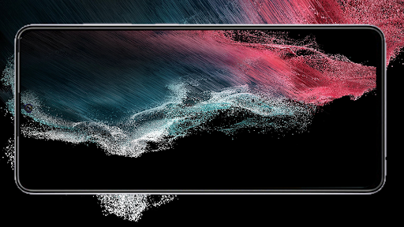
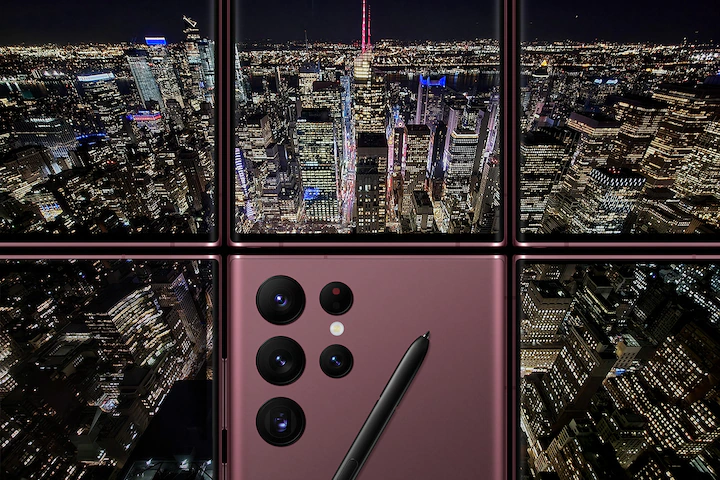
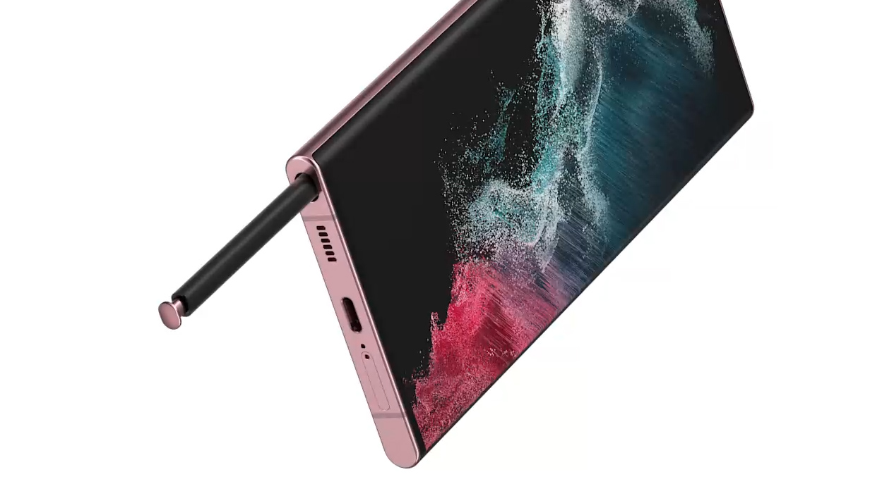
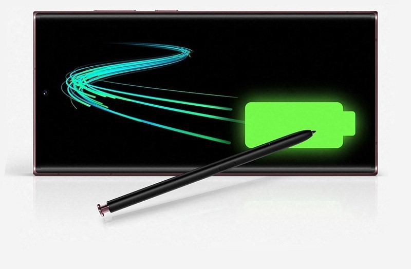

The Samsung Galaxy S22 Ultra is the headliner of the S22 series. It's the first S series phone to include Samsung's S Pen. Specifications are top-notch including 6.8-inch Dynamic AMOLED display with 120Hz refresh rate, Snapdragon 8 Gen 1 processor, 5000mAh battery, up to 12gigs of RAM, and 1TB of storage. One of the Galaxy S22 Ultra's most impressive features is its telephoto lens, which offers 10x optical zoom. We are not sure how Samsung managed to fit this lens in such a low profile, but it's there, and it's like a pair of binoculars. See product Website
Samsung Galaxy S22 Ultra 128 GB
€1,299.00 €1,199.00
SKU: 256458
Rating:
More products like thisThe new Galaxy S22 with a 108MP high-resolution camera for unique photos. The fastest processor in Samsung Galaxy & fast charging for all-day battery. View specifications.
Product Description
SCREEN

Your favorite content.
Our brightest screen.
Take your must-see content to the next level on our brightest, smoothest adaptive 120Hz display with Vision Booster to optimize brightness and color contrast.
NIGHTOGRAPHY

Good light is
now any light
with Nightography
AI brilliance brings light to dark photos on both the 108MP Wide-angle Camera and the 40MP Selfie Camera. Super Night Solution intelligently brightens up the scene so you can use the night to style your Portrait mode shots without losing details.
S-PEN

The first
Galaxy S with
built-in S Pen
The iconic S Pen fits right into S for the first time. Eject it from the bottom to take notes, sketch, edit content with precision or control your phone.
BATTERY

Go all day and
supercharge your
night
Work, play and do your thing from one day into the next with a massive 5000mAh (typical) battery that intelligently saves power for when you need it most.
S22 Ultra Specifications
| Dimensions | 163.3 x 77.9 x 8.9 mm |
| Weight | 228 g / 229 g (mmWave) |
| Build | Glass front (Gorilla Glass Victus+) |
| Glass back (Gorilla Glass Victus+) | |
| Aluminium frame | |
| IP68 dust/water resistant (up to 1.5m for 30 mins) | |
| Stylus | |
| Type | Dynamic AMOLED 2X, 120Hz, HDR10+, 1750 nits (peak) |
| Size | 6.8 inches, 114.7 cm2 |
| Resolution | 1440 x 3088 pixels (~500 ppi density) |
| OS | Android 12, upgradable to Android 13, One UI 5 |
| Chipset | Exynos 2200 (4 nm) |
| CPU | Octa-core (1x2.8 GHz Cortex-X2 & 3x2.50 GHz Cortex-A710 & 4x1.8 GHz Cortex-A510) |
| GPU | Xclipse 920 |
| Main Camera | 108 MP, f/1.8, 23mm (wide), 1/1.33", 0.8µm, PDAF, Laser AF, OIS |
| 10 MP, f/4.9, 230mm (periscope telephoto), 1/3.52", 1.12µm, dual pixel PDAF, OIS, 10x optical zoom | |
| 10 MP, f/2.4, 70mm (telephoto), 1/3.52", 1.12µm, dual pixel PDAF, OIS, 3x optical zoom | |
| 12 MP, f/2.2, 13mm, 120˚ (ultrawide), 1/2.55", 1.4µm, dual pixel PDAF, Super Steady video | |
| Main Video | 8K@24fps, 4K@30/60fps, 1080p@30/60/240fps, 720p@960fps, HDR10+ |
| Selfie Camera | 40 MP, f/2.2, 26mm (wide), 1/2.82", 0.7µm, PDAF |
| Selfie Video | 4K@30/60fps, 1080p@30fps |
| Type | Li-Ion 5000 mAh, non-removable |
| Charging | 45W wired |
| 15W wireless | |
| 4.5W reverse wireless |
Reviews
Total Rating:
I love my Samsung Galaxy S22 Ultra
Rating:
I know that it's a lot of money, but I don't upgrade every time a new phone comes out. I'm really sad that there is no slot for an SD card because I take thousands of photos. So far everything is going well. Ilike the pen, it's the first time I have had one on my phone. The camera is nice, it has some really great editing features like shadow and glare removal. You can even remove a person or thing in the photo if you want to! I recommend!
Can't go wrong with this phone
Rating:
This phone is a powerhouse and stops at nothing. I'm a web developer and I need a snappy phone that runs the latest and greatest, as well as provides me with mobile internet access all the time, and this phone does not disappoint. The cameras are also amazing, even compared to my old s20 FE. A great addition that I didn't expect to be so handy is the S-pen. It's great for jotting down quick notes, doodling at random, editing screenshots, etc. It even has music controls so that you can take the pen and control your music if you are one to plug your phone into a hi-fi away from your desk and such. If that's not your thing, it's nice to have extra tools sometimes when you need them, even if you don't use them often. The screen is also stunning even in comparison to my S20 FE, much brighter, sharper, and overall very color-accurate. Battery life is also great, and if I needed to I feel like I could get 2 days of power out of the battery without needing to plug in again. Hats off Samsung! Good job on this one.
Fabulous phone
Rating:
Bought the Galaxy S22 Ultra as I wanted a camera with longer optical zoom for gig photos. The camera takes crisp sharp photos, colours are vibrant, portrait background blur is almost there, with some anomalies but but usually hardly noticeable. I would like bulb mode or longer than 30s max time, ie 900s for ND filters, as you can get filter holders for this and a tripod clamp, this potentially could take great long exposure shots as a much lighter kit than a DSLR. Battery normally lasting about 5 days as I am not a prolific phone user. Very impressed so far.
Almost perfect
Rating:
I am an Android user from the beginning of Android phones. Everything is just a tick below perfection. To power it off you have to press 2 buttons and use 2 hands to do it. Liked my S9+ better but it lacked some neat features of this S22U. I have a S5 that I use strictly as a car phone that I still like but it just did not have enough memory. If it did I'd still be using it. Also, it seems heavy. Haven't weighed it yet But I will soon just for my own knowledge. A lot to learn about the S-pen. A lot!
No SD card slot & no headphones slot.
Rating:
No removable storage & no headphones insert. Just make sure you know this. I am not happy about it but I will switching this phone to another line that doesn't require much more storage and I never use headphones but for those who do. You need an adapter for the headset. I am going to look for the another phone that allows headphones and SD card.